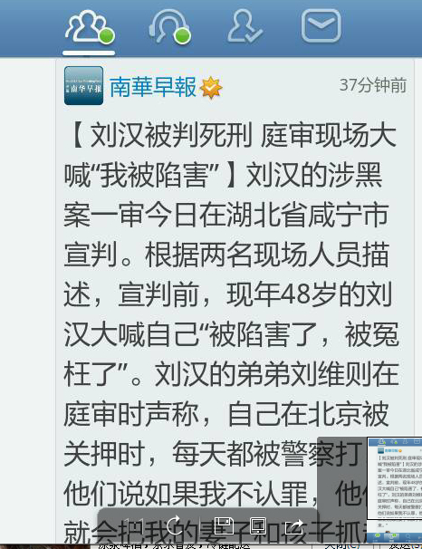
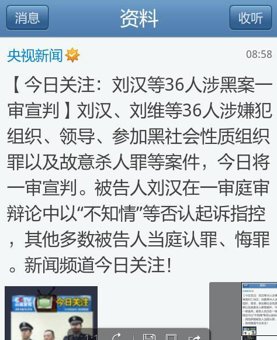

Conversation with 81184027 at Fri 23 May 2014 06:07:50 PM CST on 154115835 (webqq)
(06:13:05 PM) 上善若水: 我又回来了
(06:13:20 PM) 上善若水: :face13:没人说话呢，开饭了
(06:16:05 PM) 光: :face14:
(06:18:02 PM) 上善若水: 胡适之说，宽容比自由更可贵
(06:18:23 PM) 安徽-市区&钟馗: http://forum.china.com.cn/forum.php?mod=viewthread&tid=3648380&extra=page%3D1%26filter%3Dtypeid%26typeid%3D850%26typeid%3D850
(06:18:48 PM) 光: 嗯
(06:19:03 PM) 光: 我们不是上帝
(06:19:19 PM) 光: 没有权力决定别人的选择
(06:19:38 PM) 光: 同样，别人也是如此
(06:19:55 PM) 光: 尊重别人的选择，即使是愚蠢的
(06:20:56 PM) 光: 因为在别人的眼里，我们可能同样愚蠢
(06:21:05 PM) 光: :face14:
(06:22:57 PM) 上善若水: 好像不是雅尼的那一首
(06:23:11 PM) 上善若水: 和兰花在一起
(06:24:02 PM) 光: ：）
(06:24:29 PM) 上善若水: 外面施工吵得要命呀
(06:24:31 PM) 光: 好比，小孩子做蠢事是正常
(06:24:45 PM) 光: 不能因为小孩子做蠢事就否定他
(06:25:02 PM) 光: 给他们时间自我矫正才是正道，符合人性
(06:25:20 PM) 光: 宽容比自由更重要
(06:25:26 PM) 光: 应该就是这样解释的
(06:26:05 PM) 光: 我们也年轻过，也做过很多蠢事
(06:26:23 PM) 光: 正是这些蠢事让我们学到很多
(06:27:09 PM) 光: 不秧苗助长，让一切自然发生自然结束
(06:35:29 PM) 光: (06:35:33 PM) 3661300980: 一户人家有三个儿子，他们从小生活在父母无休止的争吵当中，他们的妈妈经常遍体鳞伤。老大想：妈妈太可怜了！我以后要对老婆好点。老二想：结婚太没有意思，我长大了一定不结婚！老三想：原来，老公是可以这样打老婆的啊！
感悟：即使环境相同，如果思维方式不同，也会影响人生的不同。
(06:42:53 PM) 上善若水: :强:
(06:42:55 PM) 光: :face14:
(06:44:28 PM) 上善若水: 流浪的云
新疆故事：朋友在新疆旅行，把手机放在草地上去追拍鸟群。回家后发现把手机忘草地上了。三天后回去找，发现手机还在原地，且被放在一堆高出草丛的石头上面，那是当地人怕他看不见，特地放在了高处。
(06:44:15 PM) 光: :face14:
(06:45:17 PM) 上善若水: 想想自已当然刚出校门
(06:44:58 PM) 光: 嗯
(06:45:57 PM) 上善若水: 一想去新疆，在成都买了一张火车票
(06:45:38 PM) 光: 嗯
(06:46:10 PM) 上善若水: 第二天去上车时发现票是昨天的
(06:46:14 PM) 上善若水: 结果没有去成
(06:45:53 PM) 光: 嗯
(06:46:39 PM) 上善若水: 如果去成了，不知后面十三年的我又会是什么样？
(06:46:20 PM) 光: 嗯
(06:48:31 PM) 上善若水: 后来在成都找工作
(06:48:46 PM) 上善若水: 在九眼桥的一个旅馆里
(06:49:06 PM) 上善若水: 听到一位老乡讲的一件事
(06:49:07 PM) 阿萨汗蛋包飯: 经历挺丰富的:强:
(06:49:20 PM) 上善若水: 让我现在记忆犹新
(06:49:39 PM) 上善若水: 在那一年前，他在成都九眼桥找工作，
(06:50:02 PM) 上善若水: 被一个新疆来的单位招去了
(06:50:10 PM) 上善若水: 和他一同的有十多人
(06:50:15 PM) 上善若水: 结果一去
(06:50:26 PM) 上善若水: 被收了一切通讯工具
(06:50:43 PM) 上善若水: 在茫茫的沙漠中间
(06:50:56 PM) 上善若水: 在一群打手的看守下
(06:51:12 PM) 上善若水: 每天干苦力，种棉花
(06:51:34 PM) 上善若水: 也根本逃不出去
(06:51:44 PM) 上善若水: 开始我以为他说的是假的
(06:51:50 PM) 上善若水: 怎么可能有这样的事
(06:51:58 PM) 上善若水: 后来报纸报道
(06:52:38 PM) 上善若水: 律师免费为去新疆劳工讨薪
(06:52:46 PM) 上善若水: 说的就是他们
(06:53:10 PM) 阿萨汗蛋包飯: :fearful:
(06:53:12 PM) 上善若水: 他说每天也有人试着逃跑，就有死在沙漠中
(06:53:29 PM) 上善若水: 也有人被追回来打个半死
(06:53:56 PM) lost message from #114733 to #114733
(06:54:22 PM) 上善若水: 有人要给家里打电话，都是有人守在旁边
(06:54:40 PM) 潮哥: 太黑暗了
(06:54:41 PM) 上善若水: 真不敢想像那种环境
(06:54:57 PM) 上善若水: 打电话只能说一切平安
(06:55:05 PM) 上善若水: 说错的就挨打
(06:55:17 PM) 上善若水: 挂名在建设兵团下的
(06:55:30 PM) 上善若水: 他们说没人告得了他们
(06:56:06 PM) 上善若水: 后来有人逃出来才揭发开的，开始他们根本没有想着还去要钱回来
(06:56:31 PM) 上善若水: 而他当时在那里等的就是那几千块钱，
(06:56:56 PM) 潮哥: 土匪啊
(06:57:27 PM) 上善若水: 这是在2000年
(06:57:51 PM) 阿萨汗蛋包飯: 2000年我还在念书
(06:58:05 PM) 上善若水: 我也刚出校门
(06:59:03 PM) 潮哥: 后来呢，那地方还在?
(06:59:11 PM) 上善若水:
(06:59:38 PM) 上善若水: 我只呆了几天，他给我讲的应当是真事
(07:00:12 PM) 上善若水: 从报纸报导律师为民工讨薪来看
(07:00:15 PM) 上善若水: 应当是真的
(07:00:38 PM) 上善若水: 只是听说那钱也一真没怎么兑现
(07:00:58 PM) 潮哥: 不用想了
(07:01:52 PM) 上善若水: 
(07:01:39 PM) lost message from #114755 to #114755
(07:02:06 PM) 上善若水: 这是差别
(07:02:05 PM) 上善若水: 
(07:02:15 PM) 上善若水: 你会相信谁说的呢
(07:03:56 PM) 潮哥: 之前不是党黑社会很牛逼了，也有今天，活该
(07:04:32 PM) 上善若水:
(07:05:52 PM) lost message from #114760 to #114760
(07:06:18 PM) 上善若水: 【大师兄和二师兄再也不想分开了啊！[哈哈]】在日本一家动物公园内，一只2岁雌性小猴同一只1岁雄性野猪结下深厚友谊。小猴生下就与母亲分开，工作人员将它和一只同样缺爱的小野猪放在一起，猪猴之间萌生深厚感情。小猴尤其喜欢趴在野猪后背上亲密依偎…http://url.cn/PAfgJw
转播和评论(7)
赞(1)转播转评论评更多
(07:07:25 PM) 上善若水: 茅于轼
南北韩是同一个民族，有相同的基因。但是北韩人由于营养不足，平均身高比南韩人矮7.5cm（Economist 2014.5月3-9日版第27页）。造成这个悲剧和六十多年前的那场战争有关，我们参与其事也有部分责任。当时大多数人看不清，都认为共产主义要解放全人类。现在应该看清楚了。
(07:09:58 PM) 潮哥: 北韩还是完蛋吧，把原来属于中国的要回来
(07:13:53 PM) 阿萨汗蛋包飯: 〝6．10〞办公室反邪的
(07:26:39 PM) 福建-福州&水浒: 俺来也～～～
(07:27:17 PM) 上善若水: :share:
(07:28:10 PM) 阿萨汗蛋包飯: 避开新闻联播，看:D
(07:28:19 PM) 福建-福州&水浒: @)
(07:28:36 PM) 福建-福州&水浒: 钢铁网能上了吧@上善若水
(07:29:06 PM) 福建-福州&水浒: 我以为那重庆的朋友忘了，今天突然发信息过来了
(07:29:23 PM) 上善若水: 能上了，查了下，四川的也差不多就是我们拿货那价
(07:29:20 PM) lost message from #114772 to #114772
(07:29:46 PM) 上善若水: 今年钢筋价还真是低哦
(07:30:05 PM) 福建-福州&水浒: 嘻嘻，认识8年多了，还是友谊好啊
(07:29:59 PM) lost message from #114775 to #114775
(07:30:25 PM) 阿萨汗蛋包飯: 当然低迷了，房地产不行了
(07:30:31 PM) 福建-福州&水浒: 我失恋的时候我去武汉叫他喝酒，
(07:30:53 PM) 阿萨汗蛋包飯: 房产跌40%中国必陷危机
(07:30:54 PM) 福建-福州&水浒: 醉一场舒服多了，他也喝高了:D
(07:31:27 PM) 福建-福州&水浒: 据说下个星期会上涨
(07:32:16 PM) 福建-福州&水浒: 降到3000以下了，真不敢想象啊:scream:
(07:32:44 PM) 上善若水: 钢铁有期货吗
(07:32:50 PM) 福建-福州&水浒: 有啊
(07:33:31 PM) 上善若水: 哦
(07:33:44 PM) 上善若水: 涨价我们也没钱进了
(07:33:33 PM) lost message from #114786 to #114786
(07:33:59 PM) 上善若水: 全得现金呀
(07:33:59 PM) 阿萨汗蛋包飯:
(07:34:04 PM) 福建-福州&水浒: 不过骗子也挺多，前几年有个人专搞期货，在武汉多个钢企做，倦了几个亿跑路了
(07:34:25 PM) 福建-福州&水浒: 估计飞国外去了，到现在都找不到人
(07:34:34 PM) 福建-福州&水浒: 淫才～～～
(07:36:14 PM) 上善若水: 呵呵是的
(07:36:32 PM) 福建-福州&水浒: 让孩子先走～～～～:D
(07:36:56 PM) 福建-福州&水浒: 最后卷几个亿再走～～
(07:37:56 PM) The account has disconnected and you are no longer in this chat. You will automatically rejoin the chat when the account reconnects.